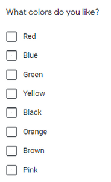
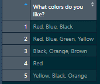
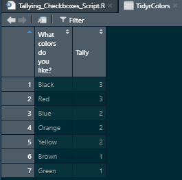
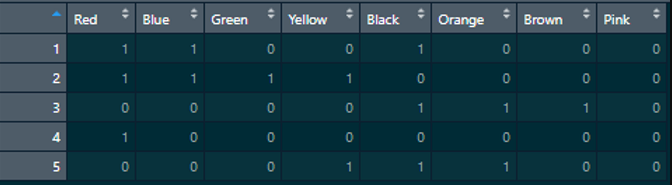

Tallying “Checkbox” Survey Responses: R Walkthrough
A guide on how to split up comma-separated survey responses in R using the grepl function in base R and various tidyverse packages . A common issue when processing “Checkbox” question types. This guide assumes that you understand how to load data into R, work with vectors, and work with basic control and loop functions.
data science
survey processing
data manipulation
r
statistical programming
r programming
data carperntry
r walkthrough
Author
Meghan Harris
Published
March 18, 2021
The Problem: You need to tally (add) checkbox survey responses, but they are combined and comma-separated together in one string.
The Fix: You need to count the occurrences of each response within each observation’s string. You can do this in a few lines with tidyr and dplyr, or in a more involved way while practicing string manipulation with regex/grepl and stringr.
The Example:
Let’s say we have a simple survey question that asks participants to select colors that they like. We allow them to “Check all that apply” and give them eight choices to choose from. It might look like this:

“A snapshot of example checkbox survey questions”
Checkbox question-types allow participants to select multiple choices. This can be useful for building strong analyses. However, we may find that the “checkbox” question-type produces undesirable data that will have to be dealt with. Let’s explore this by setting up our R session.
If you’d like to follow along within the R project files you can download them from the Tidy Trekker Github Repository. Be sure to fully extract the ZIP. folders for proper access. You can also download the data set used and load it into your own session for practice.
Using “separate_rows” from Tidyr and “count” from Dplyr:
The simplest and fastest way to tally up these results is to use tidyr and dplyr together. We start by loading in the packages we need: readr, dplyr, and tidyr. These allow us to get our data into the environment and prepare it for cleaning and manipulation. We’ll name the resulting data set “Colors.”
library(readr)library(dplyr)
Attaching package: 'dplyr'
The following objects are masked from 'package:stats':
filter, lag
The following objects are masked from 'package:base':
intersect, setdiff, setequal, union
library(tidyr)Colors <-read_csv("Data/Colors.csv", col_types =cols(`What colors do you like?`=col_character()))
Pay attention to the file path in the “read_csv” function. If you copy and paste that command and are not using the project files within the Github link above, you will get an error!
We can see our data set in the data viewer. Notice that each observation has a combined, comma-separated string for each response:

“A snapshot of example checkbox survey question loaded into a dataframe”
We need to tell R to separate the values in the What colors do you like? column into individual rows and then count and tally those occurrences. Let’s do this and store it in a data set called TidyrColors. The code for this can be written in one chunk with the following:
TidyrColors <- Colors %>%separate_rows(`What colors do you like?`, sep =", ") %>%count(`What colors do you like?`, sort =TRUE, name ="Tally")
The separate_rows() function from tidyr separates all the values in the column while using “,” as the characters to separate on. Note that we have a whitespace after the comma in the sep= option. This is because whitespaces are present in the original data. If you had options that were only separated by commas and no spaces, you would just need a comma there.
Next, we used the count() function from dplyr to count the occurrences of our colors. Setting the sort= option to TRUE will arrange the observations in descending order in the dataset. The name= option will allow us to set the column name that will hold the count of the values. In this case, we’ve set it to Tally.

“A snapshot of example checkbox survey results separated and tallied together”
And that’s it! Pretty simple and straightforward. Continue on for more involved ways to do this that will give you some string/regex practice if interested!
Using Grepl (or Stringr), Dplyr, and Tidyr:
There are other ways we can do this that are a bit more involved, but can provide some grepl/regex and string manipulation practice if desired. If you choose to use Stringr instead of grepl, you can load in the stringr package as well.
# If using the stringr package===library(stringr)
In order to get a tally of the individual responses, we need to break up these strings and create variables for each color. We do this by creating a new column for each of our color options available for our survey question. Let’s create a reference vector of all of our color options to help us. We’ll name it Colorref:
Pay attention to the strings you enter into your reference vector. These strings need to match your survey responses/options PERFECTLY. Be mindful of any discrepancies in capitalization, spelling, spaces, or punctuations.
Using the reference vector we just created, we can now create an empty data frame that we can populate with our color tallies. We’ll call it Colorsnew. We can use base functions in R to do this. To ensure the tallies are properly recorded in the new data frame, we’ll set the number of columns to match the number of options (Colors) we have and the number of rows to match the number of observations (or rows) we have in the original data set. Afterwards, we replace the column names with the name of each color choice. This can be done with the names function.
The next step is to simultaneously populate all the columns in the data set with an accurate tally for each response. We can do this with the ifelse and grepl functions within one single “for-loop.” This will populate our currently empty Colorsnew data set so we can easily see our changes. The for-loop function will run iterations along the length of the Colorref vector and use the vector’s values to fill in the column names of our data. At the same time we’ll be getting getting a count of how often each color is present in the original Colors dataset with the grepl function. Detailed information about for-loops can be found in the Iteration chapter in the free textbook R for Data Science (written by Hadley Wickham and Garrett Grolemund) :
for (i inseq_along(Colorref)){ Colorsnew[i] =ifelse(grepl(Colorref[i],Colors$`What colors do you like?`),1,0)}
To reiterate, this code uses the i variable as a placeholder to rename the columns within the Colorsnew data set with the strings found in Colorref (All of our color options.) For each column, we are using an ifelse() test to scan the original strings in the What colors do you like column from the Colors data set (Colors$What colors do you like?). Simultaneously, we check for matches using the grepl function. If you aren’t a fan of using grepl, you can also opt for Stringr’s str_detect() function that performs the same action.
for (i inseq_along(Colorref)){ Colorsnew[i] =ifelse(str_detect(Colors$`What colors do you like?`,Colorref[i]),1,0)}
Whether you use grepl or stringr, the result will be the same. Each match will produce a “1” while non-matches produce a “0.” The result is a matrix of observations for all of our color choices:

“A snapshot of example checkbox survey results separated”
Our last step will be to transpose this wide data into a long data format for easier graphing and analyses. (You can check out a tutorial on wide and long data in R from DataCamp here.) We do this using the pivot_longer, group_by, and summarise functions from the dplyr and tidyr packages. In our pivot_longer function, we tell R we want to transpose all of the columns in the “Colorsnew” dataset with dplyr’s everything() option. We tell R that we want all of our current column names to be put into one variable called Color and that we want the values in these columns to be put into its own column called Tally. Finally, we want to group the data set observations by the “Color” column and add all of the tallies up so we get a sum for each value within the Tally column. This will produce a data frame with a complete tabulation of all the color choices that were picked in our survey.
“A snapshot of example checkbox survey results separated and tallied together”
Have any thoughts or suggestions? Know of a better solution or way to make this process more efficient? Feel free to contact me directly! Respectful discourse towards efficient solutions or new insights is always welcomed!
![]()